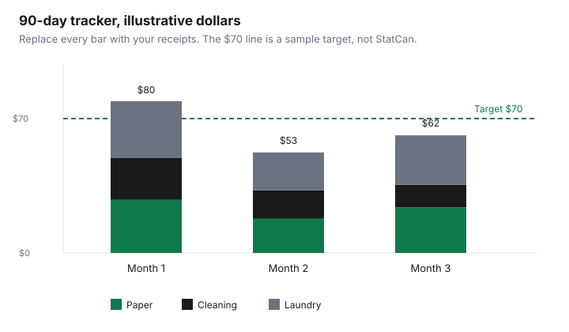

Household Items and Supplies · Canada
How to Cut Your Household Supplies Bill in Canada: A Cleaning, Paper, and Laundry Audit That Sticks
Paper, detergent, and cleaner disappear inside a grocery total. The fix is a split, a unit price, and a cap on how much you store. This guide does not print a national monthly supplies bill. The “$50 to $100 a month” line that shows up in casual talk was not on a source opened for this draft, so it is not used as a fact. Your number is the one on your receipts.
Statistics Canada is the benchmark for categories, not for your closet. The method below is yours to fill. Banner comparisons that were not priced on 26 September 2026 are left blank on purpose.
Disclosure: Budget spreadsheets and similar tracking tools, and cash-back portals for online household orders, are offer types. Saving Optimizer may earn a commission if we later add a partner link. We do not currently claim a partnership with a budget-app, spreadsheet vendor, or cash-back portal. Prices below are date-stamped. Education only.
Key takeaways
- Pull three months of receipts and put supplies on their own line. Food stays on the food line even when one card paid both.
- Table 11-10-0222-01 is the category lens. The 21 May 2025 Daily chart shows 2023 household operations at $6,014 on average. That figure is not a detergent budget.
- Price the 12 items you actually finish: per load, per 100 sheets, per bag, or per litre. A few Costco East rows dated 10 Jun 2026 are filled in. The other banners are yours.
- Buy at a flyer price you wrote down, hold two to three months, and do not open a second bottle while the first is half used.
- A 90-day tracker compares your three lines with a target you chose. The chart on this page is illustrative.
Pull 3 months of receipts and split household supplies out of the grocery total (the StatCan household-operation lens)
Download or photograph three months of grocery, warehouse, and dollar-store receipts. On each one, move toilet paper, paper towel, facial tissue, garbage bags, laundry detergent, dishwasher detergent, and all-purpose cleaner onto a supplies column. Leave food, including the cleaner that is actually a food item only if you eat it, on the food column. One debit at the till can still be two budget lines. If you cannot see the line items, the payment total is not usable for this audit. Start the next month with photos.
Statistics Canada table 11-10-0222-01, “Household spending, Canada, regions and provinces,” is the public version of that split. The Daily chart of 21 May 2025, sourced to that table, reports average 2023 spending of $12,046 on food, $6,014 on household operations, and $3,390 on household furnishings and equipment. Canada-level figures on that chart include the provinces only. They are current dollars, they include sales taxes, and they average in households that spent nothing on the category. The Survey of Household Spending for 2023 was collected from January to December 2023. A table page consulted in search on 26 September 2026 showed a release date of 18 September 2026 for 11-10-0222-01. The dollar figures quoted here are the ones printed on the 21 May 2025 chart, not a newer extract this draft did not open.
Do not divide $6,014 by 12 and call the result your paper-and-soap budget. Household operations is a wide category sitting beside food, not a synonym for the cleaning aisle. Open the table and read which series sit under it before you borrow the total. Furnishings and equipment ($3,390 in that 2023 chart) is where appliances and furniture live, which is a different purchase from a bottle of detergent. The point of the lens is the split: supplies are not “part of groceries” just because they rode home in the same bag.
Build a unit-price baseline: cost per load, per sheet, per bag, per wash for your 12 most-used items
Pick the 12 products you replace without thinking. For each one, write the price, the count on the label, and the unit that matches how you use it. Laundry is price divided by washloads. Bathroom tissue and paper towel are price divided by sheets, then stated per 100 sheets so packs can be compared. Bags are price divided by the count in the box. Liquids are price divided by litres. The arithmetic is the same habit as the grocery unit-price guide. A smaller bottle on sale can lose. A “100 loads” claim that the label does not print is not a number you may invent.
The filled rows are from a Costco East flyer report dated 10 June 2026, covering Ontario and Atlantic warehouses and a flyer window the post dates as 8 June to 5 July 2026. They are third-party shelf reports, not a Costco.ca page opened item by item. The unit costs are this draft’s division of those prices. Blank rows are for Walmart, No Frills, Giant Tiger, and Dollarama, which were not priced here. “Cheapest verified banner” says “only banner priced” when that is all the evidence is.
| Item | Unit | Store | Price | Unit cost | Cheapest verified banner |
|---|---|---|---|---|---|
| Kirkland Signature laundry detergent, 146 washloads | Per load | Costco East | $19.99 | $0.137 | Only banner priced |
| Tide Original, 146 washloads | Per load | Costco East | $23.99 | $0.164 | Only banner priced |
| Kirkland Signature bathroom tissue, 30 × 380 sheets | Per 100 sheets | Costco East | $23.99 | $0.210 | Only banner priced |
| Charmin Ultra Soft, 30 × 200 sheets | Per 100 sheets | Costco East | $32.49 | $0.542 | Only banner priced |
| Kirkland Signature paper towel, 12 × 160 sheets | Per 100 sheets | Costco East | $24.99 | $1.302 | Only banner priced |
| Kirkland Signature large garbage bags, 100 | Per bag | Costco East | $14.99 | $0.150 | Only banner priced |
| Palmolive Advanced dishwashing liquid, 4.27 L | Per litre | Costco East | $9.99 | $2.34 | Only banner priced |
| Kirkland Signature dishwashing liquid, 2.66 L | Per litre | Costco East | $10.99 | $4.13 | Only banner priced |
| Your cleaner | Per litre | ||||
| Your paper towel | Per 100 sheets | ||||
| Your garbage bags | Per bag | ||||
| Your laundry detergent | Per load |
Sheet counts used: 30 × 380 = 11,400 sheets, and $23.99 / 114 = $0.210 per 100 sheets. Charmin 30 × 200 = 6,000 sheets, and $32.49 / 60 = $0.542 per 100 sheets. Paper towel 12 × 160 = 1,920 sheets, and $24.99 / 19.2 = $1.302 per 100 sheets. Loads: $19.99 / 146 = $0.137 and $23.99 / 146 = $0.164. Litres: $9.99 / 4.27 = $2.34 and $10.99 / 2.66 = $4.13, rounded to the cent. Bags: $14.99 / 100 = $0.150. If a later label changes the sheet count, redo the division. Shrinkflation is that change. The method for spotting it is the shrinkflation guide.
Where each item is cheapest in Canada: Costco bulk vs Walmart vs No Frills vs Giant Tiger vs Dollarama
A national ranking would need the same SKU, the same week, in each banner. This draft does not have that. It has one dated Costco East list. Use it as a baseline, then price the same unit at the banners you actually pass. Walmart, No Frills, Giant Tiger, and Dollarama belong in the blank rows because those are the signs on Canadian streets, not because a winner was measured. A dollar-store bottle can win per trip and lose per litre. A warehouse pack can win per load and lose if half of it expires in a closet you do not have.
Membership is not free even when the detergent unit looks low. Whether the card pays for itself is the Costco and No Frills cart split, not a sentence in a supplies audit. Discount-grocery rotation, including Walmart, is the banner comparison. Online repeats of the same paper goods are a different contract: skip, cancel, or keep is the Subscribe and Save guide. A cash-back portal on an online household order is an offer type, named in the disclosure, not a step that changes the unit price on the label.
Stock-up rules: buy at the flyer low, hold 2–3 months max, and stop duplicating half-used bottles
Write the unit cost when you see a low price. Buy only if it beats the baseline in the table, and only for a product you finished inside the last three months. The hold limit in this method is two to three months of use. That limit is a household rule so cash and cupboard space stay available. It is not a figure from Statistics Canada. A 146-load detergent that your household finishes in four months is already over the limit if you buy two.
Before the purchase, open the cupboard. If a half-used bottle of the same job is already there, the flyer is not a reason to start a second one. Duplicates feel like savings and spend like rent. Put the next review on a calendar 60 days out. If the bottle is still half full, you overbought, and the next flyer is a pass.
Swap list: store brands, concentrates, and reusables that cut cost without worse results
Swap on the unit and on the result you can see, not on a slogan. On the 10 June 2026 Costco East prices, Kirkland Signature at $0.137 a load was lower than Tide Original at $0.164 a load, same stated load count. That comparison ends there. It does not say every store brand cleans the same, and it does not say Tide is never the right buy if your machine needs that formula. Run the cheaper one for a month. If the result is worse in a way you will not live with, go back and record that, so the next audit does not “save” money by creating a redo.
Concentrates win when the label’s litre count, after you dilute as directed, beats the ready-to-use bottle per litre of usable cleaner. If the label does not state a yield, do not invent one. Reusables win when you already replace a disposable on a schedule: a cloth you wash against a pack of sheets you can price. They lose when you buy the reusable and keep buying the disposable. One swap at a time. Twelve swaps in a weekend produce a cupboard you cannot audit.
Monthly household-supplies budget table and a simple SVG tracker for the next 90 days
Give the supplies line a dollar job inside the zero-based budget. The categories below are the ones this audit can see. The amounts are blank because your three-month split is the source. Do not copy another household’s number, and do not copy $6,014.
| Category | What goes here | Your monthly amount |
|---|---|---|
| Paper | Tissue, towel, napkins | |
| Cleaning | All-purpose, bathroom, dish liquid, dishwasher detergent | |
| Laundry | Detergent, stain remover, dryer sheets if you still buy them | |
| Bags and wrap | Garbage, food storage, foil | |
| Other supplies | Anything you moved off the food line and have not named |

For 90 days, record the three lines at each month-end and compare them with the target you wrote. A month under target is information. A month over target is a receipt to open, not a reason to hide the category back inside groceries. A spreadsheet you already have is enough. A new tracking subscription is an offer type, not a requirement.
Sources & date stamps
- Statistics Canada, The Daily chart “Average spending on selected major expenditure categories, Canada, 2019 to 2023,” 21 May 2025, source table 11-10-0222-01: 2023 food $12,046, household operations $6,014, household furnishings and equipment $3,390. Provinces only. Current dollars.
- Survey of Household Spending, 2023, Daily release context: collected January to December 2023; averages include households with no spending in the category; sales taxes included. A table view showed release date 18 Sep 2026; dollar figures here are from the 21 May 2025 chart.
- Costco East cleaning-supplies post, 10 Jun 2026, Ontario and Atlantic, flyer window stated as 8 Jun to 5 Jul 2026: the eight shelf prices in the unit-price table. Unit costs are arithmetic on those prices.
Frequently asked questions
How do I separate household supplies from my grocery total?
Export three months of card and cash receipts. On each grocery trip, move toilet paper, detergent, bags, and cleaners onto a supplies line and leave food on the food line. The receipt total can stay one payment, and the budget needs two rows. A flyer app will not do that split for you.
What counts as household supplies in StatCan's spending categories?
Table 11-10-0222-01 keeps food and household operations as different expenditure categories. On the 21 May 2025 Daily chart of that table, 2023 household operations averaged $6,014 and food averaged $12,046, provinces only, current dollars. Household operations is wider than paper and detergent. Open the table and read the series names before you treat $6,014 as a supplies target.
How much should I stock up on when something is on sale?
This guide's rule is two to three months of a product you already use, bought at a flyer price you have written down, and no second bottle while the first is still half full. That is a household limit, not a Statistics Canada finding. More than that ties up cash and hides a duplicate.
Are store brands really as good for cleaning and paper?
Judge the job, not the logo. On the Costco East prices dated 10 Jun 2026, Kirkland Signature laundry detergent was $0.137 a load and Tide Original on the same post was $0.164 a load, both at 146 loads. That is one flyer, two SKUs. It is not a lab test and not a reason to call every store brand equal.
Is Costco always cheapest for household supplies?
No. The priced rows in this draft are Costco East flyer figures from 10 Jun 2026 only. Walmart, No Frills, Giant Tiger, and Dollarama were not priced here, so they are blank rows for you to fill. Membership math for the warehouse itself is a separate decision.